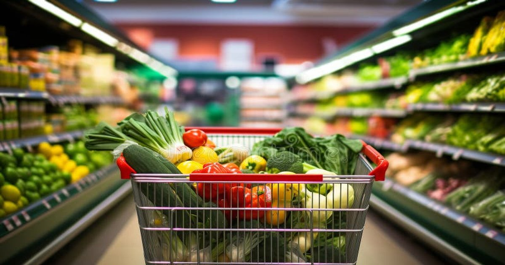

You walk into the grocery store. You have good intentions. You want to eat high protein. You want to hit your macros. Then you see the bakery section. The chips. The cookies. The frozen pizza. Your brain gets hijacked. You leave with a cart full of carbs and zero meal plan. The Protein Intake Calculator can tell you how much you need. But if you don't buy the right food, you won't eat it.Protein Intake Calculator
Enter your weight, activity level, and goal — get your daily protein target in grams per pound and grams per kilogram.
All data stays in your browser — we never see it.
Macro Split Planner
Enter your calorie target and protein percentage — get a daily macro split with meal-by-meal recommendations.
All data stays in your browser — we never see it.
Protein Source Comparator
Compare cost per gram, leucine content, PDCAAS score, and digestibility across protein sources.
All data stays in your browser — we never see it.
Meal Protein Tracker
Log your daily meals and see protein per meal — get instant feedback on your distribution.
All data stays in your browser — we never see it.